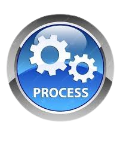

🌐 Acesse a Aplicação
Primeiro, abra a aplicação de extração de texto com OCR em seu navegador. Você verá uma interface similar à abaixo:

Aprenda a extrair textos de documentos digitalizados e imagens de forma rápida e eficiente, economizando tempo e esforço. Extraia informações de contratos, faturas, relatórios e muito mais, e transforme-os em textos editáveis e pesquisáveis para facilitar seu trabalho diário.
🔍 Busca e Indexação: Transforme documentos digitalizados em textos pesquisáveis, facilitando a busca por informações específicas.
📄 Automatização de Processos: Extraia dados automaticamente para preencher formulários, bancos de dados ou relatórios.
📚 Digitalização de Arquivos: Converta arquivos físicos em digitais, permitindo armazenamento e compartilhamento eficientes.
💼 Aumento de Produtividade: Reduza o tempo gasto na digitação manual de textos de documentos digitalizados e imagens.
🌍 Disponibilidade Pública: Esta aplicação está disponível para todos e permite a carga de um arquivo por vez. Versão Pública: 1.3.5
🏢 Solução Corporativa: Para empresas, oferecemos uma solução corporativa que permite a carga em lote de arquivos e o armazenamento das extrações em um banco de dados. A nova versão 2.0 inclui integração com a API da OpenAI, permitindo funcionalidades avançadas de processamento de linguagem natural.
💡 Possibilidades com a API da OpenAI: Após a extração do texto, utilize o chat da OpenAI embutido na aplicação para realizar análises, gerar resumos, responder perguntas sobre o conteúdo extraído e muito mais, tudo de forma automática e eficiente.
A solução corporativa é ideal para empresas que precisam processar grandes quantidades de documentos regularmente, proporcionando benefícios como automação avançada, melhor gerenciamento de dados e economia significativa de tempo e recursos.
Primeiro, abra a aplicação de extração de texto com OCR em seu navegador. Você verá uma interface similar à abaixo:
📤 Clique no botão para carregar a imagem, PDF ou arquivo DOCX do qual você deseja extrair o texto.

Selecione o arquivo local (imagem, PDF, DOCX) ou da web com o link "https://arquivo.tipo".

Ao selecionar o idioma correspondente no arquivo ou imagem digitalizado, ele será extraído com melhor precisão de reconhecimento dos caracteres. Isso acontece porque os dados de treinamento e idenficação de imagem são feitos por região.
Extração para até 10 idiomas
Oferecemos suporte para extração em tempo real para uma variedade de idiomas:

⏳ Clique no botão  para começar o processo de extração. Aguarde enquanto o texto é extraído.
✅ Será possível visualizar o documento original e os dados extraídos logo abaixo

Clique no botão "▼ ou ▲" para adaptar sua visualização em tela.

Extrair somente paragrafos relacionados as palavras-chave indicadas no campo de texto.
É possível indicar quantas palavras-chave forem necessárias separando-as por ",".
Após indicar as palavras-chave clique no botão de processar novamente e veja a extração somente dos paragrafos relacionados.

🔄 Minimizar: Para minimizar a aplicação, clique no ícone de minimizar (🔽) localizado na parte superior esquerda da janela.
🌐 Idioma: Você pode alterar para até 10 idiomas de extração (🌐) selecionando a opção desejada.
🔑 Palavras-chave: Use o campo de palavras-chave (🔑) para facilitar a busca de textos específicos para extração.
Parabéns! Você completou o tutorial de utilização da nossa aplicação de extração de texto com OCR. Se você tiver alguma dúvida, assista novamente o vídeo tutorial ou entre em contato com o suporte.
{kind=link}